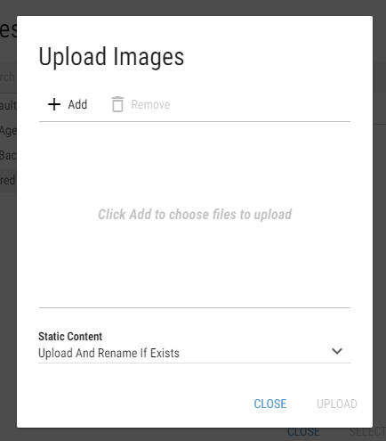

Static content¶
Static content are resources, used by some segment types, such as Images, PDF Documents, Kpis. These resources need to be included into the application first, before they can be used.
These files can be included into the application either by:
Manually copying the files into the correct folder on the server, where the DW application is deployed.
Static content is located in the static-content\files\{Id of a Business Unit} subfolder of DW application deploy folder.
Using the Content Files Manager dialog, described in the Content management chapter.
Content management¶
Some resources are included by default. Custom resources need to be included into the application first, before they can be used. This can be achieved in two ways:
By clicking the Manage CSV/Image/Audio/PDF Files button in the layout list. For more information see Working with the Layout List chapter.
When a segment uses resource, a Content Files Manager button is displayed in the corresponding field. A path to the desired file can also be typed directly into the text field.
Figure 1: Field with the Content Files Manager button
Clicking the button opens up the Content Files Manager dialog.
Figure 2: Content Files Manager
List of folders - List of folders within the Static Content folder. This section also contains a search bar for faster filtering in the list of folders.
List of files and folders - List of files and subfolders within the folder, selected in the section 1. Files and folders can also be filtered by using the search bar. Double-click on a file in this section automatically selects the file and closes the dialog. Double-click on a folder opens it in the list of folders.
Create Folder - A folder can be created by clicking this button.
Upload File - Clicking this button opens an upload dialog. The dialog allows the user to add files from his file system to the list. Added files won’t be uploaded until the button is clicked.
Figure 3: Upload dialog
Locate the desired files by clicking the button and decide how the static content should be uploaded. Available options are:
Upload And Replace If Exists - static content files are uploaded. In case a file with the same name already exists, it is replaced by the uploaded file.
Upload And Rename If Exists - static content files are uploaded. In case a file with the same name already exists, the uploaded file is renamed.
Upload If Not Exists - static content files are only uploaded if they do not already exist.
Download File - Each file can be downloaded by selecting it in the list of files and clicking this button.
Delete selected files/folders - Selected files or folders can be deleted by clicking this button.
Upload configuration
Configuration is located in the static-content\api\appsettings.json of DW application deploy folder.
Default configuration:
{
"ContentFiles": {
"ImageFiles": {
"Extentions": [".jpg", ".jpeg", ".png", ".gif", ".webp", ".svg"],
"MaxFileSize": 10485760
},
"AudioFiles": {
"Extentions": [".mp3", ".wav"],
"MaxFileSize": 3145728
},
"PdfFiles": {
"Extentions": [".pdf"],
"MaxFileSize": 10485760
},
"FontFiles": {
"Extentions": [".ttf", ".woff", ".woff2"],
"MaxFileSize": 5242880,
},
"CsvFiles": {
"Extentions": [".csv"],
"MaxFileSize": 2097152,
}
},
"Cache": {
"UrlsCacheDuration": 200
}
}
- Extentions
The application can be configured to only allow specific file formats for each type of the static content.
- MaxFileSize
Maximum allowed file size of uploaded file.
This limit applies only when uploading files through Upload dialog. Bigger files, copied manually to server, can still be used in segments.
- UrlsCacheDuration
How often the database is checked for new static content files in layouts with anonymous access allowed.